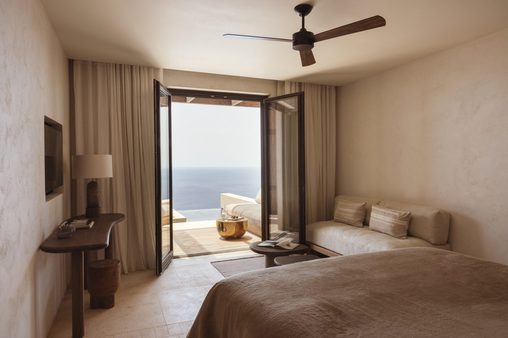
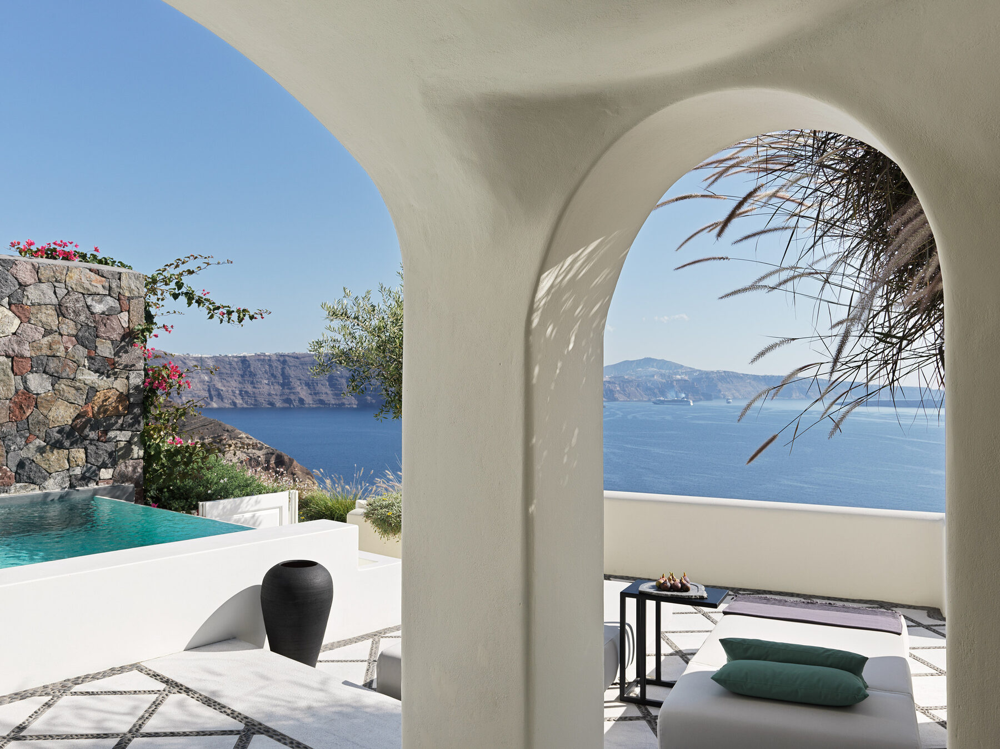

Canaves Epitome · Santorini
The Single Best Hotel I Experienced In Greece
Perfect For · Return Visitors, Families, Privacy Seekers, Design Lovers
Wow, I don't really know what to say about Epitome, other than wow. This was my favorite hotel across nine islands in the Cyclades, and perhaps one of the top three stays of my entire life. The one thing to understand: it sits a short walk from Oia near Ammoudi Bay rather than directly on the Caldera — so first-time visitors picturing the classic cliffside image are choosing a different experience. For me, that tradeoff is more than worth it. Landscaped gardens behind volcanic-rock walls make the common areas feel a world away from the busy streets of Oia, and with 53 rooms and no age restrictions, it still feels boutique.
The two-bedroom suites are the star. Separated by floor with large pools, decks, and outdoor dining areas — some rooms sit below the pool with views looking up into it.
The best sunset in Greece. You're watching an actual sunset into the Aegean rather than watching the sun disappear behind the Caldera.
Omnia was the best hotel restaurant I ate at all trip. And full-property buyouts are available — this is my pick for the best villa experience in Santorini.
If you're asking me for the single best hotel I experienced across the Greek islands on this trip — it's Canaves Epitome.

Gundari · Folegandros
Unlike Anything I've Ever Seen
Perfect For · Honeymoons, Anniversaries, Remote Luxury Seekers
You get picked up at the port — or helicopter charter directly in — and after a short drive, you hit a dirt road out toward the cliff's edge. In the distance, a beautiful dark stone building blends into the horizon. It's unlike anything I've ever seen. Gundari has around 30 rooms, all with endless ocean views and private plunge pools, and because Folegandros sits on a somewhat obscure ferry line, the people who are there really want to be there — quiet, like-minded, and laid back. Every little design detail here was clearly very well thought out, down to the outdoor shower overlooking the Aegean.
The coolest infinity pool in the Cyclades. Without a doubt — and the spa and gym were fantastic as well.
Give it three nights. If it's booked out and you can only do two, still go — Folegandros is right next to Santorini, so it's an easy honeymoon or anniversary add-on.
A team that listens. A few finishes aren't holding up to the elements yet, but the staff was responsive and grateful — not defensive — when things were flagged. I can't say that about every hotel from this trip.
Folegandros is a fantastic island, and Gundari makes it even more special.

Canaves Oia Suites · Santorini
The Classic Santorini Experience, Perfected
Perfect For · First-Time Visitors, Honeymooners, 40+ Couples
This was the best hotel I saw for first-time visitors to Santorini, and I'd be hard pressed to recommend any other hotel first if someone specifically wants the classic caldera-luxury experience. Recently completely renovated, it blew me away everywhere I looked: quality of finishes, privacy (a rarity on Santorini), private water features, and landscaping. It's set higher on the Caldera than most, so you get more privacy, and every room has coverings above the outdoor spaces.
The River Pool Suite is the single best suite I saw in Greece. Across all 38 hotels.
48 total rooms and villas. Including three private two- to three-bedroom villas — a rarity in Oia or Imerovigli.
The best spa product on the Caldera. Completely brand new, plus a large gym and easy shuttle access to the other Canaves properties. Note the 13+ age requirement.
For first-timers, honeymooners, and 40+ couples who want the classic Santorini experience, this is the one.

Parilio · Paros
A Design Lover's Dream
Perfect For · Design Lovers, Couples, Families & Groups In The Villas
As a design lover, Parilio was perhaps my favorite stay in the Cyclades. It's set just outside Naoussa, and while most rooms don't have ocean views, it doesn't really matter — the property itself is so beautiful, and the way the light moves through it around twilight is magical. What I loved most, though, was the service: the staff actually cared to get to know you and your preferences. The food was fantastic, the massage was great, and as a bonus, guests can use the beach club at sister property Cosme for free.
Request the Sun Suite up at the villas. One of the three Sun Suites sits at the new hilltop villas with ocean views and a massive private pool — ask for that specific one.
The new villas are a sneaky value. Three-bedroom villas run around $3,000–$3,500 per night in peak season — brand new, with full access to the hotel's amenities. For a group or family, that's genuinely reasonable.
Expect kids at the pool in July. It was quiet during my stay, but peak-summer guests told me otherwise. That's Paros in July.
I'm very pro private-villas-at-hotels these days versus standalone villas — and Parilio's are the best case for it.

Andronis Boutique · Santorini
Authentic Cave-Style Luxury In Oia
Perfect For · Younger Honeymooners, First-Time Visitors
This was actually my top property in Santorini until I experienced Canaves — which is to say it's a truly fantastic, top-notch hotel. Recently renovated, the rooms are authentic cave-style rooms with beautiful finishes and fixtures, and some of the suites are incredibly unique, particularly the two-level Eternal Suite. Every room has a plunge pool or jacuzzi — which isn't the case at the Canaves hotels — and rates tend to land slightly below sister property Andronis Luxury Suites.
The "stay in Imerovigli to avoid crowds" narrative doesn't hold here. At the top Oia properties, no one is walking directly in front of your room — while several Imerovigli hotels sit right on the Fira-to-Oia hiking path. If privacy matters, say so when booking.
Spa devotees should also look at Andronis Concept. Its spa in Imerovigli was one of my top five in the Cyclades.
For a honeymoon, compare the top tier. Andronis Boutique, Andronis Luxury Suites, Canaves Ena, and Canaves Oia Suites — judged on the actual room, privacy, water feature, and price. Between those, you really can't go wrong.
Cave-style rooms are what people picture when they book Santorini — and Boutique's are the real thing.

Bill & Coo Coast · Mykonos
Adults-Only On A Protected Bay
Perfect For · Couples, Beach Club Lovers, Long Lunches
I stayed at Bill & Coo's Mykonos Town property, but I preferred the Coast location for a few reasons: it's adults-only, it has a beautiful private beach club, rooms sit directly on the ocean, and the suites are massive and incredibly private — some with truly spectacular private pools. The Coast location also sits in a protected bay, so the meltemi winds that can whip the Town property's infinity pool are far more minimal here. If I had the choice, I'd always choose Coast.
The best breakfasts I had in Greece. At any hotel, on any island. I was usually full until dinner.
A massive new gym complex and spa are underway. Once completed, they should bring the property to another level.
Independently owned, with staff who return season after season. To me, that's one of the best signs that things work well behind the scenes. Lunch at Beefbar is a bit sceney, but the beach club itself is extremely relaxing.
Like Cali and Kalesma, Bill & Coo proves how good Greece's independent hotels are at creating a real sense of place.

Kalesma · Mykonos
Cycladic Minimalism, Done Beautifully
Perfect For · Couples, Sunset Lovers, Slow Evenings In
Wow, Kalesma is such a beautiful property. The combination of Cycladic minimalism with dark woods and marble just works incredibly well, and the location is fantastic — set above Ornos Bay and very central on Mykonos. It's very much a couples-oriented property; children are allowed, but I didn't see any during my two nights. I loved sitting in my jacuzzi with a glass of wine overlooking the bay so much that one night I skipped going out entirely and had dinner on my own patio.
Request the junior suites left of the pool bar. They're more private than the one I stayed in — and interestingly, the base rooms above the junior suites are more private still.
The fire pit overlooking Delos. A fantastic place to sit around sunset before heading out to dinner.
Wellness isn't the selling point. The spa is small and the gym is adequate — and the food wasn't my favorite of the trip. Come for the design, the views, and the calm.
Cali is flashier on paper, but Kalesma's laid-back beauty is what won me over.

Cali · Mykonos
The Best Hotel Gym I've Ever Seen
Perfect For · Fitness-Minded Travelers, Privacy Seekers
I really loved Cali and think it's such a unique offering on Mykonos. Located on the island's quieter eastern side, it's another of Greece's incredible independent hotels with a strong sense of place — something I often find lacking at the big luxury brands. Service was extremely refined, with staff calling guests by name and anticipating needs, and the infinity pool is one of the largest and most unique I saw in Greece, with real space between loungers. Many rooms have private plunge pools that are very, very private — a genuine rarity in Greece.
The gym is genuinely remarkable. Pilates reformers, squat racks, dumbbells up to 75 pounds, plus padel, tennis, and pickleball. I'd stay here again just for the gym.
Far from the party scene — by design. But the hotel can arrange boat or car transfers to the beach clubs and nightclubs if that's what you're after.
Mykonos is a smart entry point. It's easy to reach from Europe and the Middle East — fly in, move south through the Cyclades, and save Athens for a separate trip.
A somewhat American, almost LA-like feel — but a genuinely remarkable property I'd happily return to.

Cosme · Paros
Laid-Back Beach Luxury In Naoussa
Perfect For · Couples, Families With Teens, 4-Night Stays
I loved Cosme. The laid-back luxury beach vibe is really refreshing, and while the room rates are high, the base rooms are massive — larger than many hotels' junior suites. The service was refined, the dining was fantastic, and the location is hard to beat on Paros: walking distance to Naoussa with a private beach club directly in front of the hotel. And despite what you may have heard, Paros is not "the new Mykonos" — Naoussa is lively and fun without the flashy scene. It's honestly just a really easy, nicely rounded Greek island.
Skip the plunge-pool rooms overlooking the shared pool. The top categories have ocean-view plunge pools, but they're not particularly private — I'd opt for a suite set farther back on the property.
The circular spa and gym buildings are a highlight. Between those, the beach club, and the dining, you could comfortably spend four nights without getting bored.
Shoulder season is the play. In May or September/October, rates can drop dramatically from peak summer pricing.
Deciding between Paros's two best? Read my full Cosme vs. Parilio comparison.

Stamna · Sifnos
Design-Forward Calm On Greece's Great Foodie Island
Perfect For · Slow Travelers, Foodies, Design-Conscious Couples
After ten nights between Mykonos and Paros, arriving at Stamna after a somewhat brutal ferry ride was a fantastic respite. Set above some of Sifnos's best beaches and centrally located in Apollonia, it's a small, design-forward hotel with excellent dining on what's known as one of Greece's great foodie islands. The design is earthy, neutral, and calming, with a wonderful feeling of being perched above the Cyclades — views stretching as far as you can see — and service that's warm and casual but still solid.
Sifnos rewards slow travel. It's one of my favorite Greek islands for hiking, food, and its rugged mountainous landscape — and Stamna is the pick if you want a smaller, design-conscious hotel over a big resort.
No spa or gym that I could find. And the pool draws a mix of young families and honeymooners, so it isn't always as relaxing as you'd expect.
The $25-per-bag laundry service is a quiet hero. You can fit a surprising amount in one bag — a lifesaver when you're doing four weeks in Greece with only a carry-on.
Small, calm, and perched above the Cyclades — exactly what you want Sifnos to be.